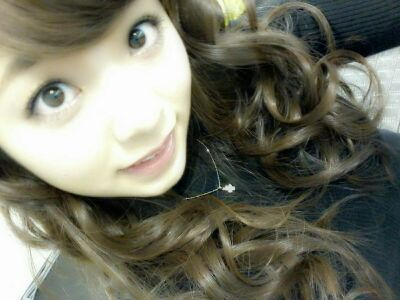
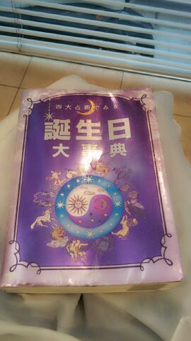
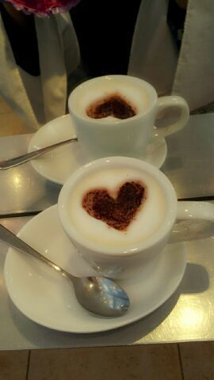
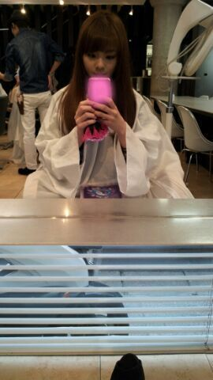

ほっほーーい ♪//
ろってぃ−だよ )))

ぁぁぁ、、)))
デビュー1周年記念live
近づいてきたぁぁぁ。
どっきどっき。
わっくわっく! ! !
月曜日、
朝から美容院に行って
3センチのカットと
トリートメントと
プリンのなおしを
してもらったよん (*^^*)
見てっ(/*^^*)/
この本を見たりしながらカラー
してもらったりしてたの。

誕生日の占いで
自分の誕生日のページを開くと
いいっぱい色々と書いてるんだけど
なかなか、
当たってたんだよね(・ω・)/
しゅごいなぁ。っと思たよ♪
あと こんな可愛らしい飲み物も
頂きました(*^^*)
美味しかったよん♪

あっ、ぴょん。
そーだ (・ω・)
最近 枕ひかずに寝てるよ //
そっちの方が首が楽やったの^^てへ
ぴょん。
ではでは、
明日も１日頑張ぁー?
ろってぃーーー(/・▽・)/☆★☆

おやすみなさいん♪
のし★